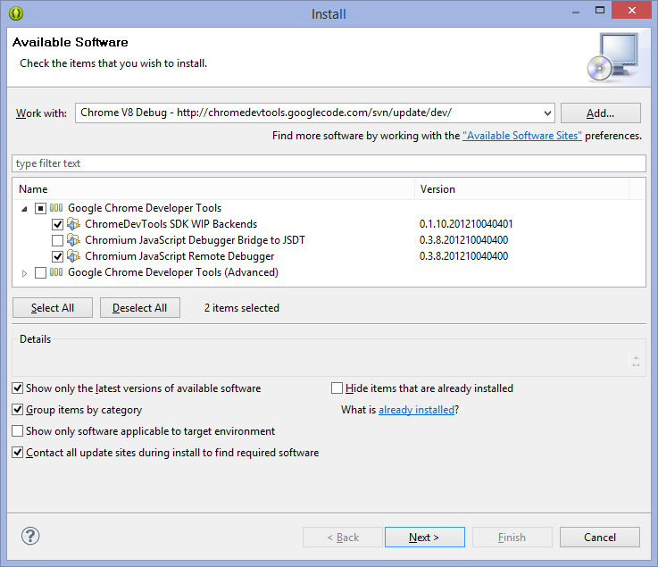
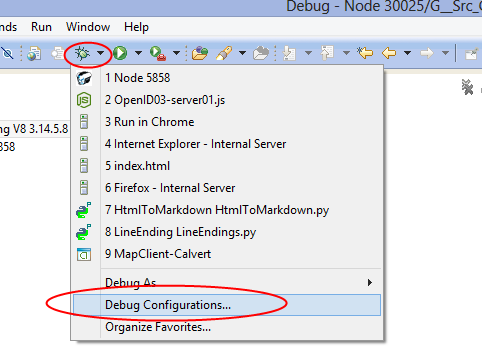
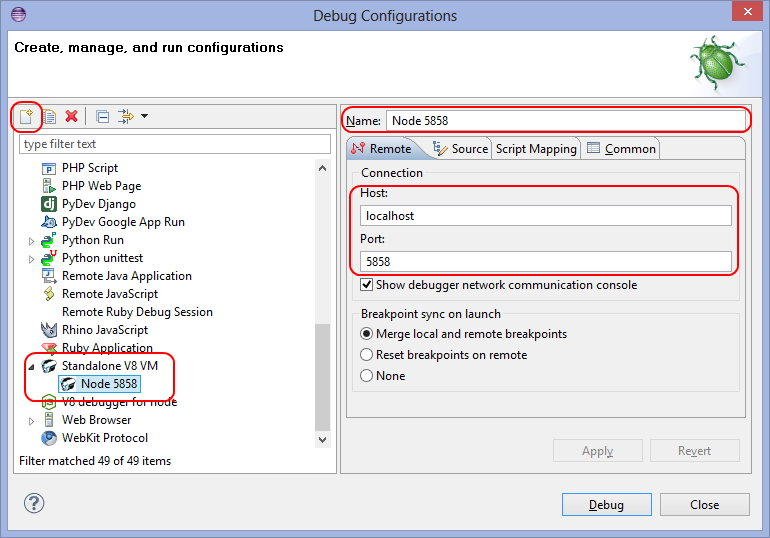
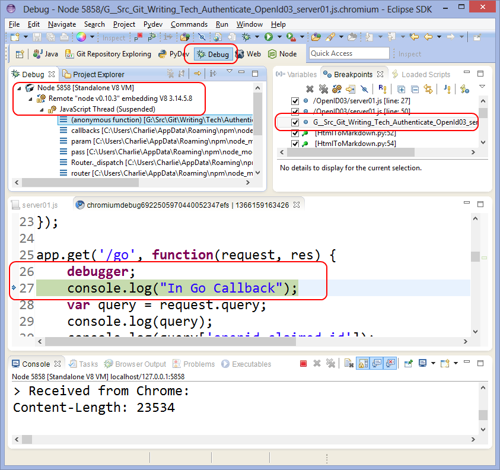

Node
Node.Js is a JavaScript engine and compiler. It ships with a set of accompanying libraries and plays host to very large set of third party libraries.
You can create general purpose JavaScript programs with Node, but it is
especially designed to help you build networked applications that link a
distributed architecture.
The NodeJs repository is here.
Install Node
Go to the NodeInstall directory in JsObjects:
cd Git/JsObjects/Utilities/NodeInstall/
There are two scripts there that you should run.
- NodeInstall.sh
- InstallNodePackages.sh
Run them one at a time, like this:
./NodeInstall.sh
./InstallNodePackages.sh
The first install node and npm. The second presents you with a menu. Install only the essentials.
Install NPM Global Libraries
Most of the actions described here are performed automatically by the UbuntuAndCloudNineSetup script. If you have run it, then you can skip this section unless you want to learn more about configuring global NPM libraries.
When using NodeJs, most developers will want to install express, karma, grunt, nodemon and jasmine-node globally.
If on Linux, first do this so that you don't have to use sudo:
mkdir ~/npm
npm config set prefix ~/npm
Then add this to the bottom of your .bashrc and restart or source bash:
export PATH="$PATH:$HOME/npm/bin"
You can now install express, karma, etc globally without using sudo:
npm install -g karma-cli
npm install -g grunt-cli
npm install -g jasmine-node
npm install -g express-generator
npm install -g nodemon
npm install -g mocha
If on Windows, you can issue the above commands without worrying about
sudo.
Node Hints
Here are some ideas for basic sanity checks.
Check if node installed:
$ node --version
v6.9.0
If you get an error instead of a version number, then it is very likely that node needs to be installed.
$ npm --version
3.10.8
Again, if you get no version number, then install node:
cd ~/Git/JsObjects/Utilities/NodeInstall
./NodeInstall.sh
Check if you have node utilities:
ls ~/npm/bin/
bower express grunt jade nodemon
Here we can see that a few essential utilities are installed into ~/npm/bin. If you don't see this, then run the InstallNodeUtilities script as described above.
Pith Teaching
You can't run a project that depends on certain packages unless those packages are installed. We run npm install to install server side packages for a project, and we often run bower install to install client side packages for a project. NPM packages usually end up in a folder called node_modules, and bower packages usually end up in either a directory called bower_components, or in one called public/components.
The list of packages to be installed on the server side are kept in package.json. The list of packages to be installed on the client side are frequently kept in a file called bower.json.
There are various variations that can be run on these scenarios, but what is laid out in the above two paragraphs is what happens most frequently in most projects, or at least in most projects that I create.
Hello World
Below you will find some sample node programs. Here are the steps
for using them.
- Create a directory to host your project. (mkdir MyFirstNodeServer)
You might for instance, create the directory in a Git repository.
- Navigate into that directory (cd MyFirstNodeServer)
- Create a file called server.js and use a text editor to place
one of the sample programs shown below inside your file.
- Then run your program by typing node server.js.
For instance, you might type something like this:
C:\Git\Prog282-Calvert>mkdir MyFirstNodeServer
C:\Git\Prog282-Calvert>cd MyFirstNodeServer
Now create server.js as described below. Then run the server:
C:\Git\Prog282-Calvert\MyFirstNodeServer>node server.js
Once the server starts, go to your browser, and type the following:
http:
Here is the first, hello world style, node program that you can
place in the server.js file:
var http = require('http');
http.createServer(function (request, response) {
response.writeHead(200, {'Content-Type': 'text/plain'});
response.end('It works!\n');
}).listen(30025);
console.log('Server running at http://127.0.0.1:30025/');
Here is another hello world type of program. Again, place it in
a file called server.js. You might for instance, create a directory
called MySecondNodeServer, and put this second server.js file
in that directory:
var http = require('http');
http.createServer(function (request, response) {
response.writeHead(200, {'Content-Type': 'text/html'});
response.end('<p>It works</p>');
}).listen(30025);
console.log('Server running at http://127.0.0.1:30025/');
And here is one more:
var http = require('http');
var fs = require('fs');
http.createServer(function (request, response) {
var html = fs.readFileSync('index.html');
response.writeHead(200, {'Content-Type': 'text/html'});
response.write(html);
response.end();
}).listen(30025);
console.log('Server running at http://127.0.0.1:30025/');
Notice that this last program depends on the presence of a file called
index.html, where index.html can be any valid HTML file.
Setting up the Port
Here is how to get the server to specify the port:
var port = process.env.PORT || 30025;
By default, we use port 30025 in my Bellevue College classes.
Cannot find module XXX
Here is the error:

Count down five lines from the line that reads "Cannot find module 'nano'". That line looks something like this:
at Object <anonymous> (/home/bcusewr/Git/isit320_Sinanai-2016/Week05-DataMaster/routes/Couch.js:12:27
This means that in Couch.js, at line 12, character 27, there is a problem finding the module nano. I can't be certain, but I imagine in your copy of Couch.js, at line 12, you would find this code:
var nano = require('nano')(servers[serverIndex])
The program wants to load the nano package and retrieve and object from it. It is failing to do so. The reason, as others have pointed out, is probably because either:
You have not run npm install in order to install the package based on the code in package.json.
Or package.json does not contain instructions to insall nano.
If you have run npm install and the problem persists, then the it is likely that the second item above is the problem. In that case, run npm install nano --save. This will both install the package, and update package.json so that in the future, you can install nano by simply typing npm install.
Using Express
You can find the HelloExpress program on JsObjects:
https://github.com/charliecalvert/JsObjects/tree/master/JavaScript/NodeCode/HelloExpress
To get started, create a directory called HelloExpress and then switch into
that directory:
mkdir HelloExpress
cd HelloExpress
The next step will be to install the express library on which this project
relies. You can do this one of two ways. Both involve issuing commands at
the shell (command) prompt. You should issue the command in the same
directory where you place your project. The simplest command looks like this:
npm install express
When you are done, you should have a folder called node_modules with the
contents of the express library in it. You can also choose to download a
global copy of express that you can use in multiple projects:
npm install -g express
npm link express
After issuing these last two commands, you are set to use Express with your
current project. If you create another project that uses express, you can give
it access to the Express library by again issuing this command:
npm link express
This will link in express using the global copy downloaded earlier. This
technique saves disk space, as it means you need only one copy of Express on
your system.
Fav-Icon Missing - 404
Sometimes, on startup, you get an error about your favorite icon missing. Put a 32 X 32 image file called called favicon.png in your public directory. Open app.js. Around line 17 you will find this code:
// uncomment after placing your favicon in /public
//app.use(favicon(path.join(__dirname, 'public', 'favicon.ico')));
Uncomment the second line and change favicon.ico to favicon.png.
app.use(favicon(path.join(__dirname, 'public', 'favicon.png')));
You can use any image editor to create or edit the PNG file. On Linux, the tool of choice is called gimp, but simpler tools will probably a do simple job like this just as well.
Hello Express
Here is the server for the HelloExpress program:
var express = require('express');
var app = express();
var fs = require('fs');
var port = process.env.PORT || 30025;
app.get('/', function(req, res) {
var html = fs.readFileSync(__dirname + '/Public/index.html');
res.writeHeader(200, {"Content-Type": "text/html"});
res.write(html);
res.end();
});
app.use("/", express.static(__dirname + '/Public'));
app.listen(port);
console.log('Listening on port :' + port);
This code has a method called app.get. It defines a default route that will
be called when the user browses to Port 30025:
http:
The app.get method shown here reads in a file called index.html, then
publishes it on the Node web server. When reading in the file, it uses a
library called fs (FileSystem) and a method called readFileSync.
NOTE: You can learn more about fs, readFileSync and the asynchronous method readFile in JsonBasics.
To make this program work, create a directory called Public. In it, put a
very simple HTML file such as this one:
<!DOCTYPE html>
<html>
<head>
<meta charset="utf-8">
<meta name="generator" content="pandoc">
<title>Express Hello</title>
</head>
<body>
<h1>Hello Experss</h1>
<p>A simple Node Express program</p>
</body>
</html>
The file shown above is the one that will be read in by the node
readFileSync method, and then served up by the node web server.
Now start the node webserver by running this command:
node server.js
Here is another NODE example that uses express:
var express = require('express');
var app = express();
var fs = require('fs');
var port = process.env.PORT || 30025;
app.get('/', function(req, res) {
console.log("root request sent");
var html = fs.readFileSync(__dirname + '/public/index.html');
res.writeHeader(200, {"Content-Type": "text/html"});
res.write(html);
res.end();
});
app.get('/dirname', function(req, result) {
result.send({'result': __dirname});
});
app.get('/port', function(request, result) {
result.send({'result': port});
});
app.use(express.static(__dirname + '/public'));
app.listen(port);
console.log('Express server started on port %s', port);
The first three lines are like import or include statements in other languages
such as Java, C# or C++:
var express = require('express');
var app = express();
var fs = require('fs');
The first line asks that we load in a library called Express. The second line
creates an instance of the express object. The third line brings a library called
fs (filesystem) that is built into node.
The next line establishs the port that your project will run on:
var port = process.env.PORT || 30025;
The words process.env.PORT refers to the environment variable called PORT. On
many machines this will not be set, so our code specifies the value for PORT if
PORT is not assigned. If you need help with environment variables, see this
page:
The next lines of code defines the action that our program will take if the
user goes to the root of our site. For instance, if we are running on localhost,
then the following method is called when the user goes to http://localhost:30025:
app.get('/', function(req, res) {
console.log("root request sent");
var html = fs.readFileSync('public/index.html');
res.writeHeader(200, {"Content-Type": "text/html"});
res.write(html);
res.end();
});
This code logs a debug message to the console. Then it reads in an HTML file
from the file system and packages it up using the HTTP protocol. It then
sends it to the user. In a typical scenario, the user invoked this method by
typing a URL in the address bar of a browser. Therefore the HTTP
packet is delivered to a browser and rendered there so the user can read it.
The following two lines of code mirror back the current directory and PORT on
which the node server is running:
app.get('/dirname', function(req, result) {
result.send({'result': __dirname});
});
app.get('/port', function(request, result) {
result.send({'result': port});
});
These commands are invoked when the user types one of the following URLS
http:
http:
The express library matches up the route designated by the URLs to the app.get
or app.post method that corresponds to it. For instance, the following URL
designates a route called dirname:
http:
This method is called when Express detects that the user designated the dirname
route:
app.get('/dirname', function(req, result) { etc...
Express knows how to handle by HTTP get verbs and HTTP post verbs:
app.post('/dirname', function(req, result) { etc...
More on this later.
For now, you can Read more here:
Node Parameters
There are three main ways to get parameters:
- request.query
- request.body
- request.params
- For getting url params: route.get('/foo:id')
- request.params.id
Suppose you write the following, where a REST parameter is passed as the second parameter to getJSON:
$.getJSON('/walker', {folder: 'Assignments'}, function(data) { ... })
Then on the server end you could write the following to display the value passed from the client:
console.log('request.query', request.query);
This would produce the following output in the console:
request.params { folder: 'Assignments' }
Consider this useful example for loading Jade/Pug files:
router.get('/:id', function(request, response) {
'use strict';
console.log('Requested: ', request.params.id);
response.render(request.params.id, {
title: request.params.id
});
});
This should be last route in the file. It says, in effect: if none of the other routes in this file have matched the request, then assume this is a request to render a jade/pug file. For instance, if the user asks for /foo, then the code will attempt to render as HTML the file in the views directory called foo.jade or foo.pug, as the case may be.
Working with Post
We used to use a tool called bodyParser() when working with post. But
now we should use connect:
npm install connect
And in your code:
var connect = require( "connect" );
app.use(connect.urlencoded());
app.use(connect.json());
And then use it:
app.post('/add', function(request, response) {
console.log('add called');
console.log(request.body);
var operandA = parseInt(request.body.operandA);
var operandB = parseInt(request.body.operandB);
var result = addingMachine.myObject.add(operandA, operandB);
response.send({ "result": result });
});
Example code is found here:
Good job troubleshooting.
There is some background here that I have not covered sufficiently in class. See the routes methods section on this page:
https://expressjs.com/en/guide/routing.html (Links to an external site.)
In the (slightly updated) NodesRoutes02 (Links to an external site.) program notice that I have two Add methods:
router.get('/add', function(request, response) {
'use strict';
console.log('add get called');
console.log(request.query);
var operandA = parseInt(request.query.operandA);
var operandB = parseInt(request.query.operandB);
var result = addingMachine.myObject.add(operandA, operandB);
response.send({
"result": result
});
});
router.post('/add', function(request, response) {
'use strict';
console.log('add post called');
console.log(request.body);
var operandA = parseInt(request.body.operandA);
var operandB = parseInt(request.body.operandB);
var result = addingMachine.myObject.add(operandA, operandB);
response.send({
"result": result
});
});
One is a POST and one is a GET. Here is the client side code that calls them:
var add = function() {
var operandA = $("#operandA").val();
var operandB = $("#operandB").val();
$.ajax({
url: "/add",
type: "GET",
data: {
"operandA": operandA,
"operandB": operandB
},
dataType: "json",
success: function(data) {
$("#addResult").html(operandA + " + " + operandB + " = " + data.result);
},
error: function(jqXHR, textStatus, errorThrown) {
console.log(jqXHR.responseText);
console.log(textStatus);
console.log(errorThrown);
}
});
};
var addPost = function() {
var operandA = $("#operandAPost").val();
var operandB = $("#operandBPost").val();
$.ajax({
url: "/add",
type: "POST",
data: {
"operandA": operandA,
"operandB": operandB
},
dataType: "json",
success: function(data) {
$("#addResultPost").html(operandA + " + " + operandB + " = " + data.result);
},
error: function(jqXHR, textStatus, errorThrown) {
console.log(jqXHR.responseText);
console.log(textStatus);
console.log(errorThrown);
}
});
};
Notice that one does a get and one does a post.
url: "/add",
type: "GET",
---------
url: "/add",
type: "POST"
And notice that the server side code differs:
--- The GET example ---------------------------
console.log(request.query);
var operandA = parseInt(request.query.operandA);
var operandB = parseInt(request.query.operandB);
--- The POST example --------------------------
console.log(request.body);
var operandA = parseInt(request.body.operandA);
var operandB = parseInt(request.body.operandB);
The get uses request.query and the post uses request.body. I was trying to explain all this earlier, but I was not giving the subject sufficient weight. The get methods sends the query as part of the URL, the POST methods sends the data a little differently, as a port of the HTTP request body. The practical difference is that we can send much more data back and forth with a post than with a get.
The $.getJSON and $.ajax do the same thing. In fact, $.getJSON calls $.ajax to do the actual work. After a bit, it is simpler to call $.ajax directly, but at first it is easier to call $.getJSON.
Using a Directory with app.use
There is one more very important line is the code sample shown in the previous
section:
app.use(express.static(__dirname + '/public'));
As you recall, our default route for this node script loads a file called
index.html that is stored in a folder called public:
var html = fs.readFileSync(__dirname + '/public/index.html');
The app.use command shown above ensures that Express knows to look in the
public directory for your files. If you don't employ app.use to make directories
known to express, then your program may not be able to locate your files.
Inside of index.html, you may want to reference JavaScript and CSS files. If
you place them in the public directory, then you should reference them like
this:
<script src="/public/jquery.js"></script>
Finally, let's think for a moment about how to load index.html in our default
handler. In many cases the following code will work, using a relative path
to find the public directory:
var html = fs.readFileSync('public/index.html');
However, the following code is preferred:
var html = fs.readFileSync(__dirname + '/public/index.html');
This code references the path to the directory where your node program
was launched, and then adds public/index.html to it. For instance, if your
server.js file were in a directory called src then the following path
would be used by readFileSync:
C:\\users\\sally\\src\\public\\index.html
If your program were in subdirectory of your home directory on Linux, then the
path used by readFileSync might look like this:
/home/sally/src/public/index.html
Express Generated Applications
Once you have some of the core concepts behind Express under your belt,
it is time to move on to full Express application. To get started, be
sure you have both Express and a template library called Pug installed:
npm install -g express
npm install -g pug-cli
Make sure the express application is on your path. It is usually found
in AppData/Roaming. For instance, the Express executable is found here
on my system:
C:\Users\Charlie\AppData\Roaming\npm\node\_modules.bin
On some systems it is here:
C:\Users\Charlie\AppData\Roaming\npm\
In either case, you are looking for a program called express and
express.cmd. Make sure they are on your path.
It may also be available here in your generated applications:
node_modules.bin
Now let Express generate the framework for your application. For instance,
the following command generates an application called MyApp01:
express MyApp01
This command creates a directory called MyApp01. Inside it you will find
one main file and three subdirectories:
%20%20%20%20MyApp01%0A%20%20%20%20MyApp01/app.js%20%20%20//%20We%20usually%20call%20this%20file%20server.js%0A%20%20%20%20MyApp01/public%0A%20%20%20%20MyApp01/routes%0A%20%20%20%20MyApp01/views
Alternatively, you can do something like this, which provides a library
called stylus for use with CSS files:
express -c stylus MyApp02
You can read about stylus in more depth later in this document.
By default, Express applications run on port 3000. Since we typically
run our applications on port 30025, the first thing you might do is
open app.js and modify the line that specifies the default port:
app.set('port', process.env.PORT || 30025);
Stylus
Stylus is a library that allows you to create CSS pages using a technique
that is a bit reminicescent of a template library or of markdown. In
other words, it provides an alternative syntax for composing CSS pages,
as well as a syntax for working with variables and parameters while
composing CSS pages.
The Stylus Home Page
When you add stylus to a node express page, the following line of code
should be present in your main express file:
app.use(require('stylus').middleware(__dirname + '/public'));
Here is a Simple Style Page
border-stuff()
border solid thin black
body
background-color #00AA00
padding: 50px
font: 14px "Lucida Grande", Helvetica, Arial, sans-serif
a
color: #004400
nav
background-color #00CC00
border-stuff(0)
padding 25px
ul
list-style none
li
display inline
border-stuff(0)
margin 10px
padding 5px
background-color #00FF00
Test with Jasmine-Node
First install jasmine-node:
sudo npm install -g jasmine-node
You will also want to install request locally with one of the following:
npm install request
npm install request
The second option saves your command into package.json, if package.json
already exists.
Create a simple route you want to test:
app.get('/hello', function(request, response) { 'use strict';
response.send('Hi there.');
});
Define a basic Jasmine-Node test by saving the following
as Tests/SimpleSpec.js:
var request = require('request')
describe("A suite", function() {
it("should respond with hello world", function(done) {
request("http://localhost:30025/hello", function(error, response, body) {
expect(body).toEqual("Hi there.")
done()
})
})
})
Now start your server running in one shell:
node Server.js
Then open a second shell and run your tests:
jasmine-node Tests/
Voila! You are done.
Require
Let's look at this line of code:
var express = require('express')
It says that you want to load a copy of a file from the Express package and retrieve an object from it.
In package.json we ask npm to install the express library into node modules:
"dependencies": {
"body-parser": "~1.12.0",
"cookie-parser": "~1.3.4",
"debug": "~2.1.1",
"express": "~4.12.2", // Ask NPM to load Express
"jade": "~1.9.2",
"morgan": "~1.5.1",
"serve-favicon": "~2.2.0"
}
Because that line is found in package.json, the following directory is created in node_modules:
Week04-AngularMongoState\node_modules\express
In that folder is a directory called lib and there is found a file called express.js. It is that file that is loaded when we call require and pass in express. Since we need the express library in a nodejs express project, it is important that we don't change that line.
Nodemon Watches for Changes
Install nodemon:
npm install -g nodemon
Now use it to start your application:
nodemon server.js
Now you won't have to restart your application each time you change
the source.
Debug Node in Eclipse
Here is how to debug outside of Eclipse:
Though it is not necessary for debugging, this is a good time to check that
you have JsHint installed. If you don't have it installed, or if you are at all
unclear how to install new software into Eclipse, then please see this link:
Just to review, here is the URL for JsHint:
After you choose Help | Install New Software and click the add button, you fill
in the dialog like this:

Let's now start talking about debugging inside Eclipse. You need to
Install V8 into Eclipse. Choose Help | Install Software as above, and
enter this URL:

Next you need to install Node Eclipse. Again Choose Help | Install Software
and this time use this URL:
Start the program like this:
node --debug-brk server01.js
Regardless of the port that you told your program to run on, the debugger
runs on port 5858:
G:\Git\OpenId03>node --debug-brk server01.js
debugger listening on port 5858
When starting the server in the browser, however, you should still use the
port you assigned:
http:
In Eclipse set up a Debug run configuration. First bring up the Debug Run
Configuration dialog:

Then set up the configuration for the V8 engine on port 5858:

I am not able to set breakpoints using the tools. Instead, I have to go into
the code and manually type the word debugger; on the line where I want the
debugger to break. Then I do the following:
- type node --debug-brk server01.js at the command line
- start the debugger in Eclipse, press F8 once to get passed the first breakpoint.
- launch my program in in the browser: http://localhost:30025
The program will then stop at my breakpoint:

You can step through the debugger with the following keys:
- F5 (Step into)
- F6 (Step over)
- F8 (Continue - run)

UpStart
UpStart is a Linux utility that ships with recent Ubuntu releases.
It can be used to ensure that your node servers or other program
stay in memory even after you have closed your shell. It will even
restart the programs automatically if the OS is rebooted.
Note that this project includes a file called ExpressSend.config.
You can use this file to ensure that your application is launched
when your OS boots, and that it will stay running, even if it
temporarily crashes.
In JsObjects, there is a program called ExpressSend:
JsObjects/JavaScript/NodeCode/ExpressSend
If you open ExpressSend.config in an editor, you will see a few
portions of the line that begins with the word exec that you might
want to edit to convert them for use in your own programs. For
instance, seee the line that begins like this:
exec /usr/bin/nodejs /home/charlie/ExpressSend/server.js
If your version of the server is located elsewhere, then change the
line as necessary. For instance:
exec /usr/bin/nodejs /home/belinda/bin/server.js
Note that I replaced charlie/ExpressSend with belinda/bin. You
should edit your version of ExpressSend.config to reflect that paths
and file names on your system.
You can create a symbolic
link to a deeply nested directory like this:
ln -s /home/ubuntu/Git/Prog282-Hints/CanvasGrid03 CanvasGrid
If you give that command in your home directory, then you will end
up with a directory that looks like this:
/home/ubuntu/CanvasGrid
The point, of course, is that this new directory is an alias, soft
link to the CanvasGrid03 directory.
Place ExpressSend.config in the /etc/init directory:
/etc/init/ExpressSend.config
The command to copy it to appropriate directory would be:
sudo cp ExpressSend.config /etc/init/.
Once the file is in the /etc/init directory, you can start your
program by typing the following:
sudo start ExpressSend
You can stop it with following command:
sudo stop ExpressSend
When you reboot the system, your program will start automatically.
Error messages and other output from your program are recorded in
the following location:
/var/log/node.log
If you examine the script, you can see that this file name is configurable.
You should create one script of this type for each program that you
want to launch.
In your node program, you may need to alter paths to your files so
that they include the __dirname variable:
var html = fs.readFileSync(__dirname + '/Public/index.html');
The following might also work, though i need to test it more:
var html = fs.readFileSync('./Public/index.html');
For now, I recommend the first option. This is necessary because your
program is no longer being launched from the directory in which you
created it, but instead, is start from the /etc/init directory. There
fore you need to use __dirname, which resolves to the complete path
to your file. For instance:
/home/charlie/git/MyProgram/Public/index.html
The __dirname variable, which is built into Node, gives you
the /home/charlie/git/MyProgram part of the path. Of course, on your
system that bit of the path will probably be different. Here is more
information on dirname:
<http://nodejs.org/docs/latest/api/globals.html
More on Upstart
We specify where the log file will be written in this part of our upstart
scripts:
exec /usr/bin/nodejs /home/ubuntu/ExpressSend/server.js >> /var/log/node.log 2>&1
This command has three parts that we need to get write:
- exec - This command executes a process or program.
- /usr/bin/nodejs - This parameter points at our nodejs program. This is the program to be executed
- /home/ubuntu/ExpressSend/server.js - This is the path to the script that nodejs will run.
Then we redirect the output from the program to a text file called node.log that is located in the /var/log directory:
>> /var/log/node.log 2>&1
To see the content of that file, run this command:
cat /var/log/node.log
That is the most important command when it comes to debugging our UpStart scripts.
Let's talk for a minute more about this strange command:
>> /var/log/node.log 2>&1
The > character redirects the output from one command to some other place,
usually a file. So this command sends the output of the echo command to a
file called foo.txt:
echo foo > foo.txt
After the command is run, foo.txt contains the string foo.
This command appends the output of the echo command to foo.txt:
echo bar >> foo.txt
Now foo.txt contains both foo and bar. The > operator will overwrite
foo.txt, and the >> operator will append data to it.
All this is called redirection, which is different from piping, which is
done with the | symbol.
This part of the command is more complicated:
2>&1
There are actually two streams of output that can occur when we launch a
program. One is the standard output stream, and that is what we are redirecting
above. The other is stderr, which is an error stream. By error stream, I mean
that it is a stream that contains the output produced by errors in our program.
The bizarre looking 2>&1 command redirects stderr to the same place as
stdout. This means that both the normal text, and the error text, is being
redirected to the same place. In our case, they are both being redirected to
node.log. When we read (cat) /var/log/node.log, we are therefore seeing
all the standard output, and all the error output, from our program.
EADDRINUSE and UpStart
The EADDRINUSE error is introduced above. Attemps to fix the error might be complicated if you are on a Linux box and using Upstart. UpStart keeps your program running even after you close the command prompt. This means you can't stop the program by just typing Ctrl-C.
When using UpStart, remember to stop any running programs, such as our
ExpressSend sample, like this:
sudo stop ExpressSend
You might think that you can tell if a program is running on a port
by going to browser and seeing if anything comes up when you type in
the address and port of your server:
http://192.168.0.1:30025
That should help you tell if something is running on that port, but
it might not if you tried to launch something on that port, but it
failed during the launch. In particular, sometimes an attempt to
start a node program with UpStart will fail:
sudo start ExpressSend
You have to check /var/log/node.log to see if there are errors. But
the port can be munged up even if the program did not start
correctly. To fix the problem, just tell the program to stop running. If
necessary, remove the script from /etc/init. This can be important
because Linux will try to rerun the script when your server restarts:
sudo rm /etc/init/ExpressSend.config
Like all powerful tools, UpStart can be a double edged sword. It gives
you control over your system, but the power it grants you can also be
source of trouble.
Creating Directories and Copying Files
See the Library in the following project for an example of how to copy
files and make directories:
JsObjects/JavaScript/Syntax/MakeDirectory.
To create a directory:
var mkdirp = require('mkdirp');
var createDirectory = function(directory) {
mkdirp(directory, function(err) {
if (err) {
console.log(err);
} else {
console.log("Created directory");
}
});
};
For mkdirp: npm install mkdirp
And to copy a file:
var copyFile = function(source, target) {
var rd = fs.createReadStream(source);
rd.on("error", function(err) {
done(err);
});
var wr = fs.createWriteStream(target);
wr.on("error", function(err) {
done(err);
});
wr.on("close", function(ex) {
done('Success: ' + ex);
});
rd.pipe(wr);
function done(msg) {
console.log(msg);
}
};
Folder Manipulation
A library with a routine for ensuring a directory exists and for
recursively removing directories.
var mkdirp = require('mkdirp');
var fs = require('fs');
var path = require("path");
var SimpleDir = (function() {
function SimpleDir() {
}
var makeDir = function(folder) {
mkdirp(folder);
}
SimpleDir.prototype.ensureDir = function(folder) {
fs.exists(folder, existsFunc);
}
SimpleDir.prototype.ensureDirSync = function(folder) {
currentFolder = folder;
if (fs.existsSync(folder)) {
return fs.statSync(folder);
} else {
makeDir(folder);
return 'successfully created directory';
}
};
SimpleDir.prototype.rmdirSync = function(dir) {
var list = fs.readdirSync(dir);
for(var i = 0; i < list.length; i++) {
var filename = path.join(dir, list[i]);
var stat = fs.statSync(filename);
if(filename == "." || filename == "..") {
} else if(stat.isDirectory()) {
this.rmdirSync(filename);
} else {
fs.unlinkSync(filename);
}
}
fs.rmdirSync(dir);
};
return SimpleDir;
})();
exports.dirs = new SimpleDir();
You might use it in node like this:
var dirLib = require('./Library/SimpleDir');
var folder = 'foo/bar/bam';
dirLib.dirs.ensureDirSync(folder);
dirLib.dirs.rmdirSync('foo');
JSHint and Node
You can run JSHint from node. First install JSHint:
npm install -g jshint
Now try running JSHint by typing the command jshint at the command line.
If you see an error about the path, then set the following environment variable:
set HOME=%HOMEPATH%
It is a bug in JsHint that makes us do this. On Linux and the Mac you probably
won't need to set the environment variable.
And finally try running jshint against one of your files:
jshint index.js
Karma and CHROME_BIN
Here's a tip:
echo 'export CHROME_BIN="/usr/bin/chromium-browser"' >> ~/.bashrc && source ~/.bashrc
Just remember that you put the call in .bashrc in case there is some reason why you don't want that behavior later on. In other words, you have now set CHROME_BIN for all bash sessions you create until you remove that line. Frankly, that seems like a totally reasonable thing to do, but just remember that you did it, in case there is some reason you want different behavior later on. Also, we don't want to put too much in our .bashrc file or they will become too complex, and take too long to execute. This one line alone won't cause problems, of course.
I believe I had referenced this bash file:
https://github.com/charliecalvert/JsObjects/blob/master/JavaScript/Design/BridgeSailor/RunKarma.sh
It is a script, and needs to be run as such:
sh RunKarma.sh
or
chmod +x RunKarma.sh
./RunKarma.sh
Then when it runs, it starts a new shell, then sets the environment variable \$CHROME_BIN in the new shell to /usr/bin/chromium-browser, and then executes the line karma start. The point, I assume, is that Karma needs to know where chromium is located, and it checks the \$CHROME_BIN environment variable as at least one way of finding it.
If you put the line: export CHROME_BIN=/usr/bin/chromium-browser at the end of your .bashrc file, then each time you start a new bash shell, that environment variable will be set.
The line source ~/.bashrc is a way to have the .bashrc file executed without having to start a new shell. It executes the line inside the present shell, and it can change the current shell, and particularly the environment variables for the current shell.
http://superuser.com/questions/46139/what-does-source-do
The point here is this. If you run source .bashrc, or if you start a new shell the normal way, then the current shell, the one you are in, is affected. It is a way of making sure that your current shell, the one at whose command line you are currently working, has executed all the commands in .bashrc. But if you run a script with the dot (.) command, then a new shell is launched, the script is run, and when it is finished you are returned to the original shell and changes the script made to the environment are forgotten. Consider running our command:
./RunKarma.sh
It creates a new shell, sets the environment variable CHROME_BIN for that shell to /usr/bin/chromium-browser. The script then starts Karma. When you hit Control-C to end the run, then you are returned to original shell, and the CHROME_BIN environment variable is returned to the state it was in before you ran the command. Since it is unlikely that anything else but Karma cares about that environment variable, then that is a reasonable solution. You could probably put ./RunKarma in your bin directory, so that you did not have to put it inside of each project.... (Yes, I tried that, and it seems to work).
Remember that you can check the current value of CHROME_BIN by typing:
echo \$CHROME_BIN
On Windows it would be:
echo %CHROME_BIN%
Symbolic Links to node_modules
There is a way to save space on your hard drive if you have a large number of very similar node_modules and bower components folders on your system. It involves creating one copy of these folders, and then linking to them from your projects.
Go into one of the projects that uses most of the packages that we have been using in this course. For instance, go into any of the projects from Week07. Run npm install and bower install.
If you do not have a temp directory in your home drive, create one:
mkdir ~/temp
Now copy or move your folders into this temp directory. Here is the copy command:
cp -r node_modules ~/temp/.
cp -r public/components ~/temp/.
Or you can just move them there, which will free up space in your current project folder:
mv node_modules ~/temp/.
mv public/components ~/temp/.
Now go into another project. If there already are any existing packages, remove them to free up space:
rm -r node_modules
rm -r public/components
Now create symbolic links to the directories in your temp folder:
ln -s ~/temp/node_modules .
ln -s ~/temp/components public/.
As far as your project is concerned, the node_modules and components folders are now part of your project. They are actually in the temp directory, but the symbolic link makes them appear to be at two places at once:
- In your current project
- In the temp directory
I do this a lot, and it works very well. Once you start to understand what symbolic links are, you will find many uses for them. For instance, in your ~/bin directory you can create symbolic links to scripts in JsObjects. Then, when you do git pull to get the latest versions of my scripts, they will automagically appear in your ~/bin directory. This is because they only appear to be in your ~/bin directory, they are really in JsObjects. There is a tiny symbolic link in the ~/bin directory that points to the real copy of the file. Symbolic links don't make copies of your files, they just point at the other location. Thus you can have many symbolic links to your ~/temp/node_modules folder while actually taking up only a small amount space on your drive.
Finally, you might want to make the code that creates the symbolic link a script, and put it in your ~/bin/directory:
#! /bin/bash
ln -s ~/temp/node_modules .
ln -s ~/temp/components public/.
Save it as ~/bin/nm-links. Make it executable
chmod +x ~/bin/nm-links.sh
Now, you can create links to these folders at any time but running the nm-links script from the root of your project. (If the folders already exist, then the script will fail.)
Debug
When running your code, make sure the debug window is open. Consider the image shown below.

Notice the following:
- We are running Chrome/Chromium, not FireFox
- The Chrome Developer Tools are open (F12)
- We are turned to the Sources page
- The red circle with the white X at the top right of the Chrome Developer Tools means there is an error
- The blue >_ symbol to the right of the red circle is toggled on (it is blue). When toggled on, this option displays the console at the bottom of the dev tools.
- The console shows our error, which states that "url" is part of an object that is not defined. We can see that the error is on line 33 of control.js
- The code in the display shows the actual line causing the problem. It is underlined with a red squiggly. Looking at the left of the display we can confirm that it is on line 33.
Turning to our editor, and moving to line 33, we can see the complete line of code causing the error:
appendUrl('#tweetList', index, tweet.text, tweet.entities.urls[0].url);
From the error messages in the dev tools, we now know that urls[0] is undefined. This is almost certainly because this particular tweet has no urls associated with it. As you know from previous lessons, the fix for this problem is to write something like this:
if (tweet.entities.urls.length > 0) { ... }
But my point here is not to provide the fix. It is to emphasize how crucially important it is that you use the debugger. I have come around to help many of you during or after class. As you know, the first thing I do is almost always to turn the debugger on. Without it the task of finding an error becomes much more difficult. We can walk from here to Tacoma rather than driving, but it is more difficult. We can fix problems in our code without the dev tools, but it is indeed much more difficult.
MERN
I'm not partial to this particular acronym, but if there is one that captures what we do, it is called the MERN stack: MongoDB, Express, React and Node. Not to be confused with the MEAN stack.
I never really set out to be a LAMP, MEAN or MERN developer. I just found the technologies I like the most that I think students need to learn to get jobs. Right now, I think that is Node with Express, React, and MongoDB. I could happily replace MongoDB with CouchDB, but Mongo is so useful in the job market.
Ten years ago it was possible to pick a "best" tool for certain tasks. Now, the best we can do is say that a particular tool is very popular, or very much in demand. Many products are both powerful and well crafted.
I pick the tools we use very carefully. I don't know how to say this properly, but have faith in me. I am showing you the right products.
NodeJS on Azure
I'm not quite sure what this command does:
npm install azure node-uuid DSInit /sqlInstance:.
SimpleDb
https://github.com/rjrodger/simpledb
Cloud 9
Cloud 9 is an online IDE. You can find it here:
https://c9.io
On your account page, you can link to your GitHub account.
Installing NPM modules:
https://docs.c9.io/installing_npm_modules.html